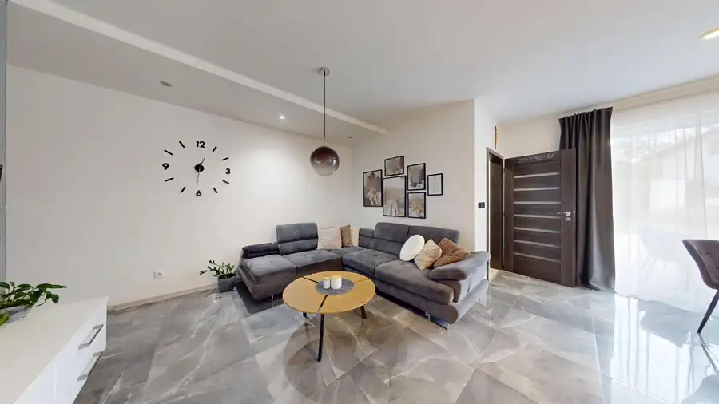
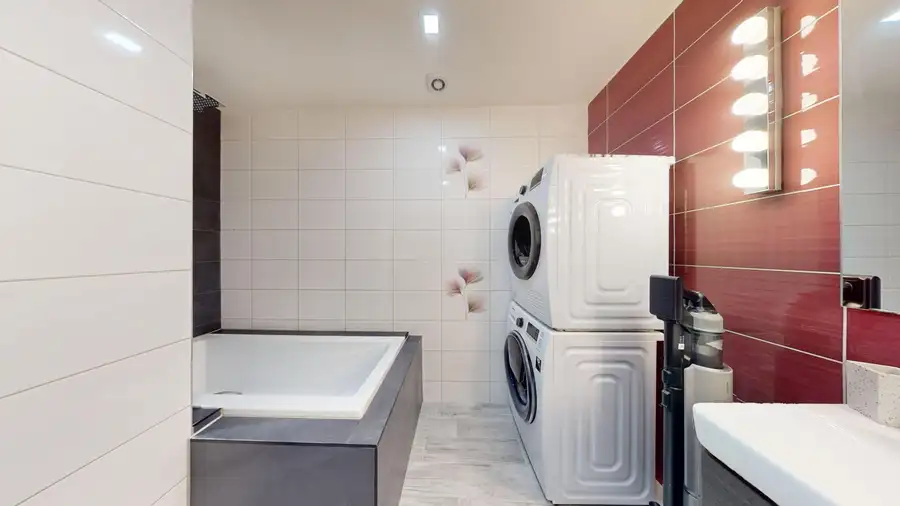
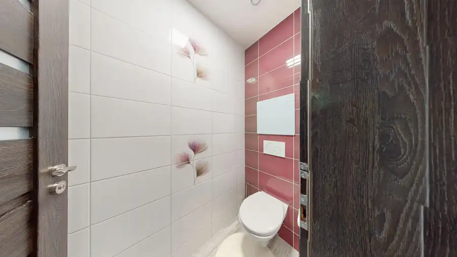
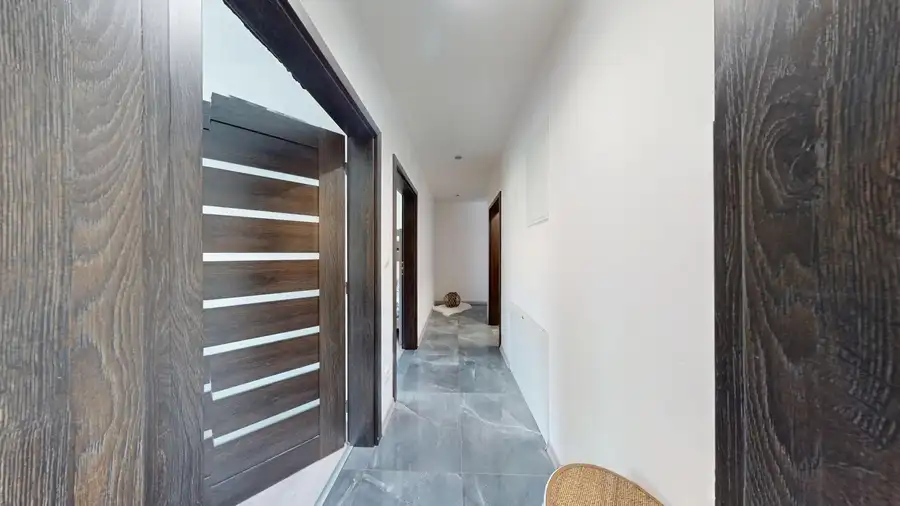
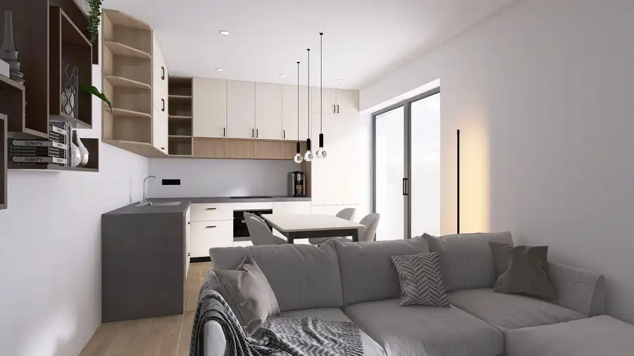
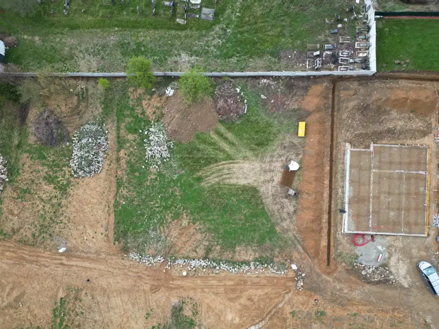
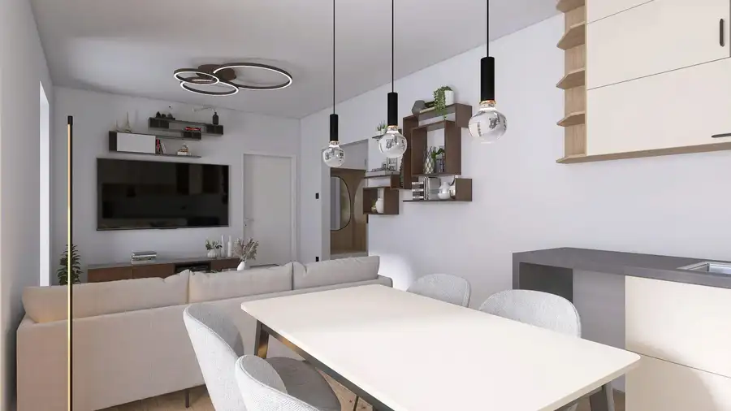

TARGETreal | Na predaj: Dizajnový 3izbový byt s predzáhradkou v Čiernom pri Čadci
Čierne




- Dispozícia3-izbový
- Plocha75 m²
- Poschodie1. z 2
- StavNovostavba
- VlastníctvoOsobné
- Energetická triedaA
O nehnuteľnosti
TARGETREAL Vám ponúka na predaj moderný 3-izbový byt nachádzajúci sa v 7-ročnej novostavbe priamo v centre obce Čierne pri Čadci.Byt s podlahovou plochou 75 m² disponuje praktickou a funkčnou dispozíciou: dve samostatné izby, priestranná obývacia izba prepojená s kúpeľňou, samostatné WC, chodba a predsieň.Veľkým benefitom tejto nehnuteľnosti je nekrytá terasa o výmere 12 m², ktorá poskytuje ideálny priestor na oddych či posedenie. K bytu prislúcha aj pivničná kobka, ktorá zabezpečuje dostatok úložného priestoru.Byt sa nachádza vo vyhľadávanej lokalite s kompletnou občianskou vybavenosťou v pešej dostupnosti, čo zaručuje pohodlné bývanie bez nutnosti každodenného dochádzania.Byt bude voľný začiatkom roka 2027 a predáva sa čiastočne zariadený, podľa dohody.Výhody:- novostavba (7 rokov)- výborná poloha v centre obce- praktická dispozícia- terasa 12 m²- pivničná kobkaNeváhajte nás kontaktovať pre viac informácií alebo dohodnutie obhliadky.+421 904 075 055lukas.janci@targetreal.sk
Parametre
- Cena vrátane energií
- Nie
- Druh
- 3 izbový byt
- Dátum zverejnenia
- 06. 10. 2026
- Energetický certifikát budovy
- A
- Orientácia
- Severovýchodná
- Podlažie
- 1
- Počet nadzemných podlaží
- 2
- Rok výstavby
- 2018
- Stav nehnuteľnosti
- Novostavba
- Terás
- 1
- Typ
- Predaj
- Typ konštrukcie
- Tehlová
- Vlastníctvo
- Osobné
- Vybavenie
- Terasa
- Úžitková plocha
- 75 m²
Kde to je


Mohlo by Vás zaujímať

BytNové 194 900 €Na predaj, Veľkometrážny dvojizbový byt, Novostavba Nové Terasy, Sučany, Martin Martin 2-izbový93.67 m²4. podlažie
PozemokNové 250 200 €TARGETreal | Na predaj, stavebné pozemky vo Vrútkach na Karvaša a Blahovca Vrútky 1201 m²
BytNové 145 000 €ZNÍŽENÁ CENA Predaj, NOVOSTAVBA dvojizbového bytu v projekte Nové Terasy, Sučany, Martin Sučany 2-izbový62 m²3. podlažie